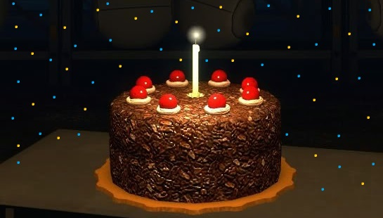

Seja bem vindo ao Portal do Portal X.X

Olá! Este site foi feito por um fã da franquia de jogos Portal, aqui eu trago explicações breves e simples sobre os dois grandes jogos da franquia. Caso você encontre um erro por favor me contate para que eu possa corrigi-lo o quanto antes.
Antes de você sair lendo, gostaria de lembrar que eu GOSTO de ambos os jogos, por isso as informações podem ter uma pequena distorção.
Caso você esteja se perguntando: sim, o bolo É uma mentira. :(